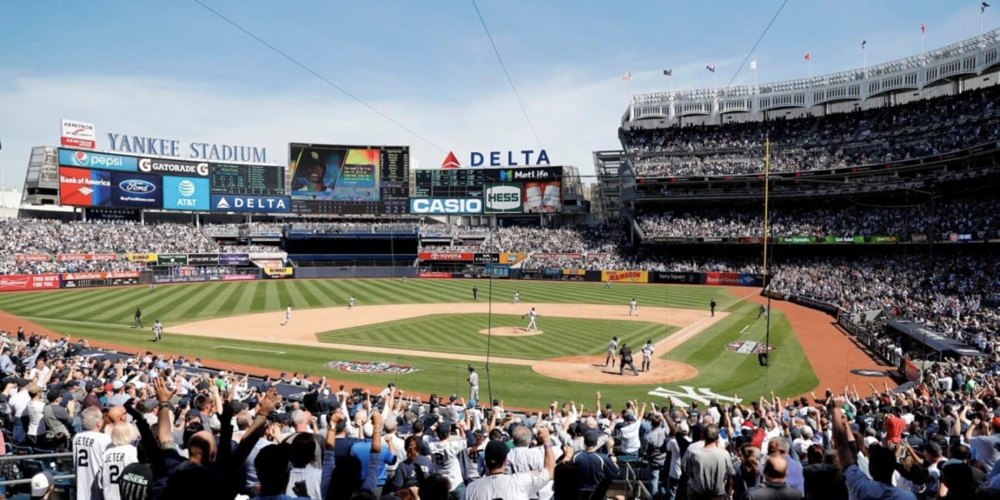

Le Yankee Stadium est un stade de baseball et de football situé dans l'arrondissement du Bronx à New York (États-Unis). Il remplace l'ancien stade du même nom en tant que domicile des Yankees de New York de la Ligue majeure de baseball. Depuis 2015, il est aussi occupé par la nouvelle franchise new-yorkaise de MLS, le New York City FC.